日期：2026年11月24日。实际完成A4.1机制修正、A4.2概率诊断、A4.3联合推断、A4.4等价性审计及A5消融。未启动E4-B/C、ARD、Split-Merge、PCMCI+、SCM和失效预警。
共24条件×20训练种子，5000主长度与1000训练前缀各480组合，共960组合。两个长度使用嵌套前缀，不是960套独立底层数据。5000主实验每批测试24×20×20＝9600条轨迹，20种方法＝192000条逐轨迹评分；测试A/B独立，总384000条主评分。用户随后要求转为小规模思路验证，故保留已完成的短前缀完整测试A（192000条评分），取消全量短测试B，只补6条件×3种子×5轨迹＝90条轨迹、1800条评分，不再新训练。容量对照、概率审计、确认与连续链另存。
一般系统：W(t+1)=F W(t)+η(t)，X(t)=C W(t)+ε(t)，η~N(0,Q)，ε~N(0,R)，初态取稳态。A为单AR1因素；B为两个独立AR1贡献之和；C为相关创新的双AR1；D为一个AR2长记忆因素（状态为当前值与滞后）；E保留双AR1与单ARMA(2,1)的精确等价。新增CL/CM/CH/CE取F=diag(0.9,0.85)、两坐标稳态边际方差1、R=0.5，真实创新相关ρ分别0/0.5/0.9/0.99。完整数值在SYSTEMS.json。本轮不是任意未知非线性系统。
模型学习函数只接收X和优化种子，不提供真实W、ρ、因素数量或系统标签。预先知道的候选族、最大状态容量4、线性高斯假设是方法限制，应与“完全无结构的自动因果发现”区分。
旧实验固定维数缓冲全部扩展至4，矩阵16、向量4、增广求逆32，并用1至4维参考滤波与预测密度验证。原代码已有完整Kalman／RTS／FFBS协方差，但旧M4只是候选模型的规范混合；不能称为共同状态向量的统一后验。审查见CODE_REVIEW.md。
| 对象 | 实际实现 | 能支持的解释 |
|---|---|---|
| R0 | 原始X谱矩／延迟初始化，保留原完整工作族及同维数dense参照 | 强直接点模型；避免用弱基准制造递进收益 |
| R1 | 完整FFBS路径初始化，保留原路径候选 | 路径是X的概率变换，不是外部新信息 |
| R2 | 严格一步先验创新产生提案，再用原X似然拟合 | 残差只提出候选，不作为独立观测重复计分 |
| R3／J1／D | 基础路径与创新交叉矩初始化，共同F/Q/R完整重估 | 共享状态空间内积分条件不确定性，不保证物理坐标身份 |
| J0 | 原M4规范模型混合 | 多解释混合，非共享状态向量 |
| J2／E | 4类结构×2粒子／池，双线各取4，总8粒子／池 | 经验Bayes有限离散结构／参数积分，非任意连续后验 |
| A／B | 仅直接／仅递进，各8粒子／池 | 与E匹配最终粒子预算、数据与原始历史 |
| C | 双线无共享状态的点模型混合 | 分离组合与共享状态效果 |
| J1_param／J2_point | 固定dense结构参数积分／多结构点参数 | 分解参数与结构不确定性的预测增量 |
所有方法用R/D独立训练池各20条，共40条；选择10条。A/B的单线是算法单线，不是只获得一个训练池。新拟合3初值×最多24次EM，参数自助粒子12次EM；稳定性投影、失败及收敛历史全部保留。训练可平滑，测试只能因果滤波。完整直接参照另保留旧80次EM工作族，因此全部训练CPU不完全一致；不能将全部差异归因为递进架构。数据处理不能凭同一完整X历史生成额外外部信息，只能改善受限表示、模型选择或优化。
stage0生成70条：R前20、D次20、选择次10，旧确认后20本轮不用。stage10新20条分两块确认；stage11/12各20条新测试A/B；stage13另20条真值审计读出，前10拟合、后10评价。不同stage独立SeedSequence；模型／选择冻结后才打开测试，测试预测完成后才开放隐藏真值。1000设置只获得训练／选择／确认同一轨迹前1000点，测试仍5000；前缀复制与无未来泄漏已审计。
主要指标是未来20步联合NLL／步，发出时点200、300、…、4900。H0：改善≤0.005，门槛从未降低。主6比较每批整体Holm6、分24条件Holm144；次要4比较Holm4／96；机制3比较Holm3／72；容量4比较Holm4／96。独立确认5760项Holm；候选四次确认均通过且功能匹配才支持新增。C相关条件诊断Holm16，连续Bayes额外Holm12。报告未校正95%效应区间和校正p值，不把区间当同步多重置信区间。主bootstrap10000次，以20种子为独立训练层，再在选中种子内重采配对轨迹；状态覆盖按种子聚类，不能把大量时间点当独立样本。
功效是预先指定假设下的近似，不是事后用实际效果解释失败。20训练种子、跨种子SD假设0.0075、真实改善假设0.010、H0门槛0.005时，单检验及保守Bonferroni界下的功效如下（Holm实际功效依其它检验结果而变）：
| 总种子数 | comparisons | sd | true_gain | threshold | power |
|---|---|---|---|---|---|
| 20 | 1 | 0.0075 | 0.01 | 0.005 | 0.890246 |
| 20 | 6 | 0.0075 | 0.01 | 0.005 | 0.641023 |
| 20 | 144 | 0.0075 | 0.01 | 0.005 | 0.199358 |
改善量为参照NLL减新方法NLL，正值有利。以下是全部预注册主比较，不按显著性筛选。
| 测试批 | 比较 | 改善量 | 95%下界 | 95%上界 | 校正p值 | 实用通过 |
|---|---|---|---|---|---|---|
| A | 创新提案相对强直接 | -5.89e-05 | -7.38e-05 | -4.42e-05 | 1 | False |
| A | 联合状态相对强直接 | -0.001047 | -0.001121 | -0.000973 | 1 | False |
| A | 共享状态相对原混合 | -0.001064 | -0.001139 | -0.00099 | 1 | False |
| A | 结构参数积分相对共享点模型 | 0.000985 | 0.000911 | 0.001059 | 1 | False |
| A | 共享状态相对双线无共享 | -0.00106 | -0.001134 | -0.000986 | 1 | False |
| A | 双线相对选择集最强A/B | 9.43e-07 | -1.15e-06 | 2.91e-06 | 1 | False |
| B | 创新提案相对强直接 | -6.43e-05 | -8.06e-05 | -4.78e-05 | 1 | False |
| B | 联合状态相对强直接 | -0.001069 | -0.001143 | -0.000996 | 1 | False |
| B | 共享状态相对原混合 | -0.00109 | -0.001163 | -0.001017 | 1 | False |
| B | 结构参数积分相对共享点模型 | 0.001004 | 0.00093 | 0.001079 | 1 | False |
| B | 共享状态相对双线无共享 | -0.001085 | -0.001159 | -0.001012 | 1 | False |
| B | 双线相对选择集最强A/B | 5.14e-07 | -1.31e-06 | 2.33e-06 | 1 | False |
| 测试批 | 比较 | 改善量 | 95%下界 | 95%上界 | 校正p值 | 实用通过 |
|---|---|---|---|---|---|---|
| A | 固定联合结构内的参数积分 | 0.00086 | 0.000787 | 0.000933 | 1 | False |
| A | 参数积分之外的结构积分 | 0.000126 | 0.000109 | 0.000143 | 1 | False |
| A | 多结构内的参数积分 | -9.06e-06 | -1.41e-05 | -4.26e-06 | 1 | False |
| A | 双线相对完整强参照 | -4.47e-05 | -6.25e-05 | -2.69e-05 | 1 | False |
| A | 创新相对原后验路径混合 | -7.63e-05 | -8.89e-05 | -6.46e-05 | 1 | False |
| A | 联合相对原后验路径混合 | -0.001064 | -0.001139 | -0.00099 | 1 | False |
| A | 创新相对新增后验路径 | -4.9e-05 | -6.13e-05 | -3.68e-05 | 1 | False |
| B | 固定联合结构内的参数积分 | 0.000864 | 0.000791 | 0.000937 | 1 | False |
| B | 参数积分之外的结构积分 | 0.00014 | 0.000125 | 0.000157 | 1 | False |
| B | 多结构内的参数积分 | -5.18e-06 | -1.01e-05 | -3.5e-07 | 1 | False |
| B | 双线相对完整强参照 | -4.86e-05 | -6.44e-05 | -3.27e-05 | 1 | False |
| B | 创新相对原后验路径混合 | -8.53e-05 | -9.83e-05 | -7.31e-05 | 1 | False |
| B | 联合相对原后验路径混合 | -0.00109 | -0.001163 | -0.001017 | 1 | False |
| B | 创新相对新增后验路径 | -5.56e-05 | -6.85e-05 | -4.32e-05 | 1 | False |
各条件等权均值，所有方法均在同一批轨迹上评价。M1弱无更新消融不作为主胜出参照；R1_original与J0同一原混合；E与J2、D与J1与R3是有意别名，不算额外独立方法复现。
| 测试批 | 方法 | NLL／步 | CRPS | 90%覆盖 | 90%宽度 | MSE |
|---|---|---|---|---|---|---|
| A | 仅直接路线 | 1.59926 | 0.819244 | 0.900393 | 4.78282 | 2.54727 |
| A | 仅递进路线 | 1.59926 | 0.819243 | 0.900313 | 4.78142 | 2.54726 |
| A | 双线无共享状态 | 1.59919 | 0.81916 | 0.900257 | 4.78096 | 2.54669 |
| A | 双线结构／参数积分 | 1.59926 | 0.819243 | 0.900384 | 4.78268 | 2.54726 |
| A | 原规范模型混合 | 1.59918 | 0.81916 | 0.900213 | 4.77976 | 2.54674 |
| A | 固定共享结构／参数积分 | 1.59939 | 0.819345 | 0.900442 | 4.78453 | 2.54779 |
| A | 多结构／点参数 | 1.59925 | 0.819237 | 0.900406 | 4.78298 | 2.54723 |
| A | M3 | 1.59918 | 0.819157 | 0.90022 | 4.77964 | 2.54672 |
| A | 强直接点模型 | 1.5992 | 0.819165 | 0.900416 | 4.78323 | 2.54669 |
| A | 后验路径提案 | 1.59921 | 0.819181 | 0.900511 | 4.78471 | 2.54681 |
| A | 创新提案 | 1.59926 | 0.819245 | 0.900431 | 4.78329 | 2.5473 |
| A | 联合状态点模型 | 1.60025 | 0.820536 | 0.90165 | 4.80246 | 2.55393 |
| A | 选择集完整强参照 | 1.59922 | 0.819174 | 0.900318 | 4.78158 | 2.54674 |
| A | 原始X历史 | 1.59927 | 0.819221 | 0.900089 | 4.77716 | 2.5469 |
| B | 仅直接路线 | 1.599 | 0.819426 | 0.900233 | 4.7828 | 2.54856 |
| B | 仅递进路线 | 1.599 | 0.819427 | 0.900145 | 4.78137 | 2.54857 |
| B | 双线无共享状态 | 1.59892 | 0.819321 | 0.900199 | 4.78093 | 2.54786 |
| B | 双线结构／参数积分 | 1.599 | 0.819425 | 0.900215 | 4.78264 | 2.54855 |
| B | 原规范模型混合 | 1.59892 | 0.819319 | 0.900131 | 4.77973 | 2.54791 |
| B | 固定共享结构／参数积分 | 1.59914 | 0.819537 | 0.900365 | 4.7845 | 2.54914 |
| B | 多结构／点参数 | 1.599 | 0.819416 | 0.90027 | 4.78296 | 2.54848 |
| B | M3 | 1.59891 | 0.819319 | 0.900118 | 4.77961 | 2.54791 |
| B | 强直接点模型 | 1.59894 | 0.81933 | 0.900385 | 4.78321 | 2.54789 |
| B | 后验路径提案 | 1.59895 | 0.819347 | 0.900423 | 4.78469 | 2.54803 |
| B | 创新提案 | 1.599 | 0.819424 | 0.900248 | 4.78327 | 2.54856 |
| B | 联合状态点模型 | 1.60001 | 0.82072 | 0.901563 | 4.80244 | 2.55529 |
| B | 选择集完整强参照 | 1.59895 | 0.819339 | 0.900249 | 4.78158 | 2.54796 |
| B | 原始X历史 | 1.599 | 0.819351 | 0.899972 | 4.77716 | 2.54803 |
| 条件 | 路线 | 通过数 | 总种子数 |
|---|---|---|---|
| A0 | 后验路径提案 | 0 | 20 |
| A0 | 创新提案 | 0 | 20 |
| A0 | 联合状态点模型 | 0 | 20 |
| A1 | 后验路径提案 | 0 | 20 |
| A1 | 创新提案 | 0 | 20 |
| A1 | 联合状态点模型 | 0 | 20 |
| A2 | 后验路径提案 | 0 | 20 |
| A2 | 创新提案 | 0 | 20 |
| A2 | 联合状态点模型 | 0 | 20 |
| A3 | 后验路径提案 | 0 | 20 |
| A3 | 创新提案 | 0 | 20 |
| A3 | 联合状态点模型 | 0 | 20 |
| B0 | 后验路径提案 | 0 | 20 |
| B0 | 创新提案 | 0 | 20 |
| B0 | 联合状态点模型 | 0 | 20 |
| B1 | 后验路径提案 | 0 | 20 |
| B1 | 创新提案 | 0 | 20 |
| B1 | 联合状态点模型 | 0 | 20 |
| B2 | 后验路径提案 | 0 | 20 |
| B2 | 创新提案 | 0 | 20 |
| B2 | 联合状态点模型 | 0 | 20 |
| B3 | 后验路径提案 | 0 | 20 |
| B3 | 创新提案 | 0 | 20 |
| B3 | 联合状态点模型 | 0 | 20 |
| C0 | 后验路径提案 | 0 | 20 |
| C0 | 创新提案 | 0 | 20 |
| C0 | 联合状态点模型 | 0 | 20 |
| C1 | 后验路径提案 | 0 | 20 |
| C1 | 创新提案 | 0 | 20 |
| C1 | 联合状态点模型 | 0 | 20 |
| C2 | 后验路径提案 | 0 | 20 |
| C2 | 创新提案 | 0 | 20 |
| C2 | 联合状态点模型 | 0 | 20 |
| C3 | 后验路径提案 | 0 | 20 |
| C3 | 创新提案 | 0 | 20 |
| C3 | 联合状态点模型 | 0 | 20 |
| CE | 后验路径提案 | 0 | 20 |
| CE | 创新提案 | 0 | 20 |
| CE | 联合状态点模型 | 0 | 20 |
| CH | 后验路径提案 | 0 | 20 |
| CH | 创新提案 | 0 | 20 |
| CH | 联合状态点模型 | 0 | 20 |
| CL | 后验路径提案 | 0 | 20 |
| CL | 创新提案 | 0 | 20 |
| CL | 联合状态点模型 | 0 | 20 |
| CM | 后验路径提案 | 0 | 20 |
| CM | 创新提案 | 0 | 20 |
| CM | 联合状态点模型 | 0 | 20 |
| D0 | 后验路径提案 | 0 | 20 |
| D0 | 创新提案 | 0 | 20 |
| D0 | 联合状态点模型 | 0 | 20 |
| D1 | 后验路径提案 | 0 | 20 |
| D1 | 创新提案 | 0 | 20 |
| D1 | 联合状态点模型 | 0 | 20 |
| D2 | 后验路径提案 | 0 | 20 |
| D2 | 创新提案 | 0 | 20 |
| D2 | 联合状态点模型 | 0 | 20 |
| D3 | 后验路径提案 | 0 | 20 |
| D3 | 创新提案 | 0 | 20 |
| D3 | 联合状态点模型 | 0 | 20 |
| E0 | 后验路径提案 | 0 | 20 |
| E0 | 创新提案 | 0 | 20 |
| E0 | 联合状态点模型 | 0 | 20 |
| E1 | 后验路径提案 | 0 | 20 |
| E1 | 创新提案 | 0 | 20 |
| E1 | 联合状态点模型 | 0 | 20 |
| E2 | 后验路径提案 | 0 | 20 |
| E2 | 创新提案 | 0 | 20 |
| E2 | 联合状态点模型 | 0 | 20 |
| E3 | 后验路径提案 | 0 | 20 |
| E3 | 创新提案 | 0 | 20 |
| E3 | 联合状态点模型 | 0 | 20 |
通过率的分母为20训练种子，不是时间点。B类至少3/4条件各16/20通过、A/D每条件最多1/20错误新增的参考Go：未通过。A/D即使0/20，Wilson双侧95%上界约16.1%，不是已证明真实错误率≤5%。不把确认未通过的候选删除成“没有失败”；保留其原样测试评分及缺失状态。全部预测方法可用率见逐轨迹available字段。代数可观测矩阵满秩也不代表物理身份可识别。
第一层是在给定参数和结构下的完整状态条件协方差；第二层是有限bootstrap参数与候选结构不确定性；第三层是X的观测分布根本无法消除的物理解构歧义。本轮分别评价，不能将其中一种冒充另外两种。
贡献规范模型F=diag(a,b)、C=[1,1]，X只约束P的行和k。令P(s)=[[k1−s,s],[s,k2−s]]，Q=P−FPFᵀ，在合法PSD区间内改变s可以保持整个X分布。全Q主诊断对ρ∈[−0.9999,0.9999]均匀先验取17点Gauss–Legendre积分；正相关先验为明确敏感性对照，非数据学出的规律。INDEP_POINT与FULLQ_POINT在ρ=0处同一规范代表，覆盖对照相等是设计结果，并非已检验所有可能全Q点估计。
PARAM_ONLY是4个训练bootstrap参数；FULLQ_PARAM为4×17；新C条件另用连续参数MCMC的8个固定样本×17相关节点。前两者是离散经验Bayes；后者目标为显式先验下精确观测似然的连续参数后验，但样本与相关方向积分仍是近似。不可识别ρ的后验应保留先验，更多同类X不能将其收缩到真实ρ。
下表为U/V两个坐标的覆盖、下界及上界的平均，便于阅读；严格逐坐标判定见calibration_decisions.csv，平均区间不用于宣称校准通过。注册规则为覆盖落入[0.87,0.93]且各自95%CI包含0.9，测试A/B分别检查。
| 测试批 | 条件 | 方法 | 均值 | 95%下界 | 95%上界 | calibrated |
|---|---|---|---|---|---|---|
| A | CE | BAYES_FULL | 0.954375 | 0.91025 | 0.9895 | 0 |
| A | CE | FULLQ_PARAM | 0.860625 | 0.811625 | 0.908128 | 0.5 |
| A | CE | INDEP_POINT | 0.637625 | 0.577125 | 0.7045 | 0 |
| A | CE | ORACLE | 0.90375 | 0.894125 | 0.91375 | 1 |
| A | CE | PARAM_ONLY | 0.638 | 0.577375 | 0.704875 | 0 |
| A | CE | RECURSIVE_POINT | 0.78175 | 0.676372 | 0.876875 | 0 |
| A | CH | BAYES_FULL | 0.946125 | 0.89375 | 0.988625 | 0 |
| A | CH | FULLQ_PARAM | 0.873625 | 0.8285 | 0.915625 | 0.5 |
| A | CH | INDEP_POINT | 0.640875 | 0.56475 | 0.720753 | 0 |
| A | CH | ORACLE | 0.890875 | 0.88225 | 0.899375 | 0.5 |
| A | CH | PARAM_ONLY | 0.640875 | 0.56475 | 0.720875 | 0 |
| A | CH | RECURSIVE_POINT | 0.784875 | 0.687 | 0.872375 | 0 |
| A | CL | BAYES_FULL | 0.737625 | 0.679 | 0.803125 | 0 |
| A | CL | FULLQ_PARAM | 0.635125 | 0.6 | 0.671 | 0 |
| A | CL | INDEP_POINT | 0.488 | 0.450747 | 0.529125 | 0 |
| A | CL | ORACLE | 0.894125 | 0.8845 | 0.903625 | 1 |
| A | CL | PARAM_ONLY | 0.48825 | 0.450875 | 0.5295 | 0 |
| A | CL | RECURSIVE_POINT | 0.6035 | 0.502 | 0.698878 | 0 |
| A | CM | BAYES_FULL | 0.892 | 0.829625 | 0.949 | 1 |
| A | CM | FULLQ_PARAM | 0.75275 | 0.709875 | 0.796125 | 0 |
| A | CM | INDEP_POINT | 0.516625 | 0.47875 | 0.557253 | 0 |
| A | CM | ORACLE | 0.89425 | 0.88575 | 0.90275 | 0.5 |
| A | CM | PARAM_ONLY | 0.516625 | 0.47875 | 0.557128 | 0 |
| A | CM | RECURSIVE_POINT | 0.697368 | 0.588549 | 0.799737 | 0 |
| B | CE | BAYES_FULL | 0.946375 | 0.893997 | 0.98625 | 0 |
| B | CE | FULLQ_PARAM | 0.8555 | 0.804875 | 0.903628 | 0.5 |
| B | CE | INDEP_POINT | 0.632375 | 0.574622 | 0.699003 | 0 |
| B | CE | ORACLE | 0.9005 | 0.890375 | 0.911 | 1 |
| B | CE | PARAM_ONLY | 0.6325 | 0.57475 | 0.699125 | 0 |
| B | CE | RECURSIVE_POINT | 0.773875 | 0.671119 | 0.867878 | 0 |
| B | CH | BAYES_FULL | 0.947875 | 0.896875 | 0.98925 | 0 |
| B | CH | FULLQ_PARAM | 0.8745 | 0.83025 | 0.916625 | 0.5 |
| B | CH | INDEP_POINT | 0.645375 | 0.567997 | 0.726253 | 0 |
| B | CH | ORACLE | 0.901625 | 0.893375 | 0.910125 | 1 |
| B | CH | PARAM_ONLY | 0.645125 | 0.567497 | 0.72625 | 0 |
| B | CH | RECURSIVE_POINT | 0.78325 | 0.684625 | 0.872503 | 0 |
| B | CL | BAYES_FULL | 0.751 | 0.694372 | 0.81275 | 0 |
| B | CL | FULLQ_PARAM | 0.645125 | 0.61075 | 0.678875 | 0 |
| B | CL | INDEP_POINT | 0.493125 | 0.454372 | 0.53375 | 0 |
| B | CL | ORACLE | 0.892125 | 0.88 | 0.904375 | 1 |
| B | CL | PARAM_ONLY | 0.49225 | 0.45425 | 0.53225 | 0 |
| B | CL | RECURSIVE_POINT | 0.604125 | 0.498494 | 0.704375 | 0 |
| B | CM | BAYES_FULL | 0.8885 | 0.823875 | 0.948378 | 1 |
| B | CM | FULLQ_PARAM | 0.7435 | 0.702125 | 0.786378 | 0 |
| B | CM | INDEP_POINT | 0.506625 | 0.475125 | 0.54075 | 0 |
| B | CM | ORACLE | 0.900875 | 0.893747 | 0.9085 | 1 |
| B | CM | PARAM_ONLY | 0.506625 | 0.475125 | 0.54075 | 0 |
| B | CM | RECURSIVE_POINT | 0.699868 | 0.596704 | 0.798816 | 0 |
测试A，所有数字来自精确有限高斯混合分布的评分。任意坐标J1/J2不伪造U/V联合NLL，而用共同S评价；物理U/V只针对贡献坐标候选。下表联合覆盖为Rosenblatt区域，不是HPD或矩匹配椭圆。
| 条件 | 方法 | CRPS | 90%宽度 | 联合状态NLL | 90%联合覆盖 |
|---|---|---|---|---|---|
| CE | BAYES_FULL | 0.3637 | 4.466 | 1.82177 | 0.9275 |
| CE | BAYES_PARAM | 0.352826 | 2.93777 | 2.06975 | 0.88525 |
| CE | FULLQ_PARAM | 0.528607 | 3.06521 | 2.55286 | 0.81025 |
| CE | INDEP_POINT | 0.545305 | 1.77847 | 5.09156 | 0.54375 |
| CE | ORACLE | 0.171205 | 1.0049 | -0.33652 | 0.908 |
| CE | RECURSIVE_POINT | 0.454307 | 2.32381 | 3.825 | 0.71375 |
| CH | BAYES_FULL | 0.370976 | 4.48697 | 1.88027 | 0.91825 |
| CH | BAYES_PARAM | 0.358333 | 2.9399 | 2.10382 | 0.882 |
| CH | FULLQ_PARAM | 0.531676 | 3.17989 | 2.56844 | 0.816 |
| CH | INDEP_POINT | 0.550776 | 1.79573 | 6.49928 | 0.53 |
| CH | ORACLE | 0.209202 | 1.21759 | 0.814944 | 0.896 |
| CH | RECURSIVE_POINT | 0.470157 | 2.2555 | 4.03314 | 0.72075 |
| CL | BAYES_FULL | 0.558003 | 2.29701 | 2.50778 | 0.72875 |
| CL | BAYES_PARAM | 0.565229 | 1.7407 | 3.20612 | 0.60775 |
| CL | FULLQ_PARAM | 0.606807 | 1.81735 | 2.99031 | 0.60175 |
| CL | INDEP_POINT | 0.629065 | 1.32642 | 11.9539 | 0.3535 |
| CL | ORACLE | 0.42943 | 2.47794 | 1.86709 | 0.9005 |
| CL | RECURSIVE_POINT | 0.569119 | 1.64707 | 9.81032 | 0.51075 |
| CM | BAYES_FULL | 0.460936 | 3.51833 | 2.18345 | 0.8615 |
| CM | BAYES_PARAM | 0.456987 | 2.36885 | 2.42453 | 0.78325 |
| CM | FULLQ_PARAM | 0.584449 | 2.3231 | 2.76281 | 0.72775 |
| CM | INDEP_POINT | 0.614581 | 1.39944 | 9.71094 | 0.37525 |
| CM | ORACLE | 0.330172 | 1.88878 | 1.60259 | 0.8915 |
| CM | RECURSIVE_POINT | 0.519886 | 1.94625 | 5.61045 | 0.618421 |
C5使用已经冻结的R_none／D_none单因素AR1/AR2/AR3训练BIC父模型，等先验、按当前及过去X在线更新。没有重新拟合或用测试选记忆阶数。其任意记忆坐标不对应物理U/V，因此U/V联合状态评分明确不适用。原冻结预测中none容量对照已保留；下表额外补齐共同S的描述性评分。该补表在主测试之后实现，按用户小规模要求仅用4个新C条件×3种子×5条轨迹；各方法都取完全相同轨迹。补表不新增检验，不替换主要或预注册C16比较。
| 条件 | 方法 | NLL／步 | CRPS | 90%覆盖 | 90%宽度 |
|---|---|---|---|---|---|
| CE | C5_memory | 0.857266 | 0.325588 | 0.92 | 1.96208 |
| CH | C5_memory | 0.898203 | 0.335624 | 0.88 | 1.95222 |
| CL | C5_memory | 0.844762 | 0.311298 | 0.9 | 1.77413 |
| CM | C5_memory | 0.794255 | 0.30109 | 0.926667 | 1.88625 |
| CE | 原规范模型混合 | 0.857278 | 0.325591 | 0.92 | 1.9622 |
| CE | 共享状态点估计 | 0.882862 | 0.332707 | 0.886667 | 1.77184 |
| CE | 双线结构／参数积分 | 0.85461 | 0.325196 | 0.92 | 1.93664 |
| CH | 原规范模型混合 | 0.898237 | 0.335636 | 0.88 | 1.95246 |
| CH | 共享状态点估计 | 0.897987 | 0.332316 | 0.853333 | 1.76458 |
| CH | 双线结构／参数积分 | 0.89416 | 0.334113 | 0.873333 | 1.92502 |
| CL | 原规范模型混合 | 0.844771 | 0.311301 | 0.9 | 1.77414 |
| CL | 共享状态点估计 | 0.869093 | 0.316998 | 0.873333 | 1.6688 |
| CL | 双线结构／参数积分 | 0.84665 | 0.311717 | 0.9 | 1.75845 |
| CM | 原规范模型混合 | 0.794257 | 0.30109 | 0.926667 | 1.88626 |
| CM | 共享状态点估计 | 0.804074 | 0.304525 | 0.893333 | 1.7225 |
| CM | 双线结构／参数积分 | 0.790932 | 0.300459 | 0.926667 | 1.85862 |
oracle真实F/Q只在审计时提供，不属于可实现模型。固定真实ρ下的频率覆盖与先验平均的Bayes可信度不同，不能因有Bayes标签就保证每个固定真机制均达到90%。覆盖不足可能包含均值偏差、协方差方向错误、模型失配和数值误差，不只意味着区间过窄；宽度也有可能超过oracle却仍漏掉真值。
新C共80任务；5维规范谱参数取显式截断正态先验，精确Gaussian likelihood，MAP初始化后两条独立自适应Metropolis链，预热1000、保留3000，保留期停止自适应。每条完整链、Rhat、ESS、接受率和优化器状态归档。标准为最大Rhat≤1.1、最小ESS≥100、接受率0.05–0.8；0/80通过。诊断不保证全局模式探索充分；未通过任务不能宣称连续后验已经可靠收敛，也不能只报通过子集的好成绩。
| 收敛 | 数量 | 最大Rhat | 最小ESS | CPU秒 |
|---|---|---|---|---|
| False | 80 | 1.13477 | 12.6572 | 2.24074 |
固定CL/CM/CH/CE种子4011两批，8/16参数样本和17/33相关节点比较，覆盖差≤0.02、宽度相对差≤10%、联合NLL差≤0.05为预定数值容差：16/16全部达到。完整结果如下，不据此选择新主设置。
| 条件 | seed | 测试批 | diagnostic | cover90_difference | width90_relative_difference | joint_NLL_difference | rho_prior_error | stable |
|---|---|---|---|---|---|---|---|---|
| CL | 4011 | A | theta16 | 0 | 0.001296 | 0.001203 | 7.63e-14 | True |
| CL | 4011 | A | rho33 | 0 | 1.08e-09 | 3.16e-09 | 5.13e-14 | True |
| CL | 4011 | B | theta16 | 0.0025 | 0.001367 | 0.00696 | 7.66e-14 | True |
| CL | 4011 | B | rho33 | 0 | 4.12e-10 | 1.61e-09 | 4.91e-14 | True |
| CM | 4011 | A | theta16 | 0 | 0.003785 | 0.007848 | 7.67e-14 | True |
| CM | 4011 | A | rho33 | 0 | 2.69e-09 | 5.86e-09 | 4.36e-14 | True |
| CM | 4011 | B | theta16 | 0.0125 | 0.001962 | 0.010206 | 7.84e-14 | True |
| CM | 4011 | B | rho33 | 0 | 5.42e-10 | 2.88e-09 | 4.9e-14 | True |
| CH | 4011 | A | theta16 | 0 | 0.000763 | 0.002614 | 7.52e-14 | True |
| CH | 4011 | A | rho33 | 0 | 1.09e-05 | 4.36e-05 | 5.32e-14 | True |
| CH | 4011 | B | theta16 | 0 | 0.002135 | 0.007171 | 8.05e-14 | True |
| CH | 4011 | B | rho33 | 0 | 1.07e-05 | 5.24e-05 | 5.43e-14 | True |
| CE | 4011 | A | theta16 | 0.005 | 0.009128 | 0.012154 | 7.96e-14 | True |
| CE | 4011 | A | rho33 | 0 | 1.73e-09 | 6.17e-09 | 5.05e-14 | True |
| CE | 4011 | B | theta16 | 0.005 | 0.00747 | 0.011581 | 8.45e-14 | True |
| CE | 4011 | B | rho33 | 0 | 9.52e-10 | 1.83e-08 | 4.6e-14 | True |
以下只评价观测规律可约束的极点、P行和与R；不把真正不可识别的Q相关性当成应该精准恢复的参数。任意共享状态的F/Q可以旋转而不改变X，故原始矩阵条目不能直接解释为因果强度。
| 条件 | 极点绝对误差 | 谱行和绝对误差 | 观测方差误差 |
|---|---|---|---|
| B0 | 0.013151 | 0.031555 | 0.041763 |
| B1 | 0.002645 | 0.010186 | 0.010273 |
| B2 | 0.052545 | 0.031838 | 0.056556 |
| B3 | 0.055223 | 0.116806 | 0.192628 |
| C0 | 0.192226 | 1.8113 | 0.024797 |
| C1 | 0.208375 | 1.88732 | 0.02469 |
| C2 | 0.061943 | 1.17517 | 0.013405 |
| C3 | 0.449345 | 1.81082 | 0.252642 |
| CE | 0.220056 | 1.80255 | 0.041539 |
| CH | 0.212778 | 1.70624 | 0.03086 |
| CL | 0.309362 | 0.93319 | 0.066287 |
| CM | 0.223047 | 1.42018 | 0.019071 |
| E0 | 0.017638 | 0.032029 | 0.049458 |
| E1 | 0.002369 | 0.011165 | 0.008938 |
| E2 | 0.054071 | 0.036365 | 0.05794 |
| E3 | 0.051407 | 0.10481 | 0.1442 |
连续参数逐参数90%区间覆盖、误差与MCMC状态在continuous_parameter_audit.csv，没有把测试真值用于后验校准。
精确双AR1→单ARMA(2,1)映射下，观测自协方差、滤波观测似然、未来均值和协方差最大审计差 4.04e-13；配对后验概率最大偏离0.5为 6.91e-12。全Q不可识别方向最大观测误差 2.26e-14；坐标旋转最大预测／似然误差 3.55e-14。这些是程序证书，不是从标签猜拒判。
单AR2一般不等价于单ARMA(2,1)，不能把两者混称；AR2移除MA项后的协方差差异已单独存表。一个物理因素可能需要多个Markov存储坐标；两个贡献模式也可能改写成一个记忆因素。新增模式证据、代数可观测秩、物理因素数与因果链身份四者必须区分。SCHEMA_ERRATUM.md解释旧兼容factor_count字段不参与数值、不得作为发现因素数。
1000设置480组合完成扩展／确认及完整测试A，旧基础族来自同一封存提交的1000模型。测试是与5000完全相同的5000点轨迹。用户在运行中要求小规模验证，原短前缀全量B已取消，不声称完成两批完整长度复现。以下仅A为原规则的次要校正结果，不能替代5000主要结论；没有全部短前缀物理校准或连续MCMC重复。
| 测试批 | 比较 | 改善量 | 95%下界 | 95%上界 | 校正p值 |
|---|---|---|---|---|---|
| A | 创新提案相对强直接 | 6.4e-06 | -1.64e-05 | 3.31e-05 | 1 |
| A | 联合状态相对强直接 | -0.000986 | -0.001026 | -0.000938 | 1 |
| A | 共享状态相对原混合 | -0.001015 | -0.001051 | -0.000977 | 1 |
| A | 结构参数积分相对共享点模型 | 0.000986 | 0.000957 | 0.001015 | 1 |
| A | 共享状态相对双线无共享 | -0.001043 | -0.001072 | -0.001011 | 1 |
| A | 双线相对选择集最强A/B | 1.73e-06 | -3.54e-07 | 4.11e-06 | 1 |
固定A0、B1、C0、D0、E1、CE六类代表系统，种子4011–4013，各取原B中前5条轨迹，共90条。复用冻结1000训练模型，保持既有测试轨迹5000点以便与主设置配对，未再拟合长序列。结果与输入哈希在small_validation，只用于检查思路和计算链路，不做3种子显著性或误报率证明；也不冒充全新尚未接触的测试分区。
小样本平均NLL改善如下，正值有利于双线。均远小于0.005实用参考门槛；它验证了计算流程可以运行，尚未给出递进／双线具有独特价值的正面证据。个别正负数值不作显著性或总体稳定性判断。
| 条件 | 双线相对最强A/B | 双线相对完整强参照 |
|---|---|---|
| A0 | 1.52e-05 | 0.000285 |
| B1 | -1.19e-05 | 0.000386 |
| C0 | -1.14e-06 | 8.18e-05 |
| CE | -3.48e-05 | 0.000203 |
| D0 | 2.63e-05 | 0.000659 |
| E1 | -1.32e-05 | -0.00015 |
后续新实验默认先用2–3类系统、3种子、约20训练／5验证／10测试轨迹、长度300–500验证一个核心假设，不自动扩到大网格。详见USER_SMALL_SCALE_AMENDMENT.md。
主设置新候选拟合累计记录CPU 1.805小时，每组合中位 11.54秒；continuous Bayes另 0.050 CPU小时。这些不包含测试、状态审计、报告生成及新C旧基础族预拟合的全部成本，不能称端到端总运行时间。2核云实例限制下的并行只改变墙钟时间。新扩展EM收敛比例 64.32%，未收敛与失败详见原参数history及诊断表。固定预算结果反映本实现，不是证明其它优化器都无效。
统计结果未据事故改阈值、调模型或重挑测试。所有registered标记原样保存，额外报告脚本属于测试后描述性展示。用户缩小规模属于明确的后续范围调整，不追认成原预注册已全部完成。冻结和重放审计见AUDIT_COMPLETE.json、short/AUDIT_A_COMPLETE.json。
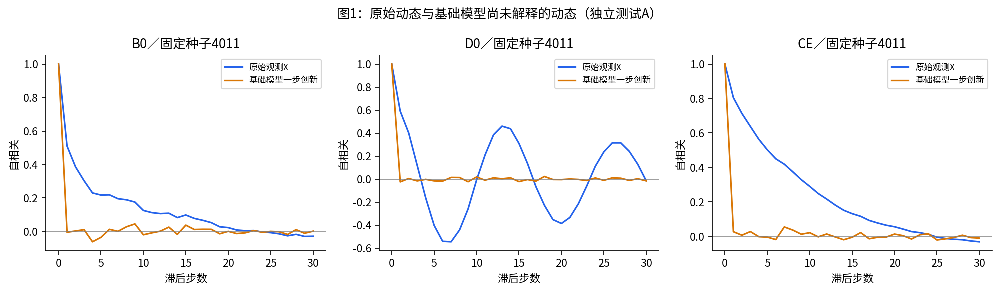
左、中、右分别固定为B0双状态、D0单因素长记忆、CE极高相关条件，均用种子4011第一条测试A，不按结果选图。横轴是滞后，纵轴为样本自相关。一步创新使用前一时刻的滤波状态发出预测，再减去新到达的X，没有未来信息。原始X有持续性不意味着基础模型仍遗漏持续性；创新接近白噪声时，从创新中另找动态状态可能只拟合噪声。创新中有剩余动态也只是提出新候选的依据，必须经独立确认，不能直接把残差命名为真实上游状态。
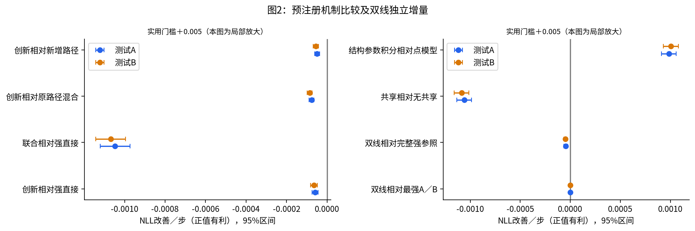
每个点代表相同测试轨迹上的NLL配对改善，横线为10000次种子与轨迹分层自助法95%区间；正值有利于新增方法。左图检查创新和联合初始化相对强直接、原路径与新增路径的收益，右图检查双线、共享状态和结构参数积分。实用门槛始终为0.005 nats/步；图上能看见微小正值或区间不跨零，并不足以通过对H0≤0.005的Holm校正检验。详细成败以表格为准。
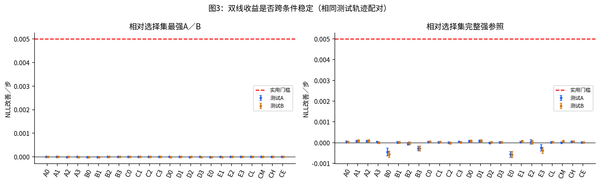
左图参照仅在选择集选定的最强A/B；右图进一步允许选择集在A、B、R0、原M3和原始历史AR中选完整强参照。参照不按测试成绩重选。A、B测试批是两个独立数据批；每个条件仍共享训练模型，因此不是40个独立训练种子。红虚线表示实用门槛。个别条件的小幅优势不能代替整体、跨批次、跨条件的稳定收益，也不能作为发现物理因素的证据。
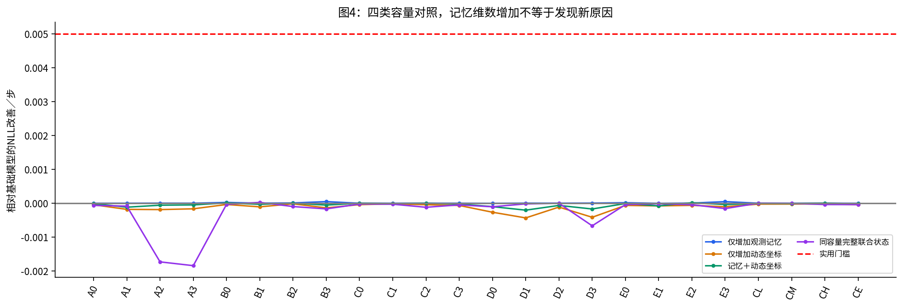
四条曲线均相对同一基础none模型：仅增加观测AR记忆、仅增加一个潜在动态坐标、两者一起增加、放开同维数完整F/Q。基础本身可能是单因素AR2/AR3记忆，而非已知真实W1。这里采用同测试轨迹、同训练池平均的配对增量；图仅展示测试A，原始表保留A/B及置信区间。若完整记忆已经解释预测信息，增加坐标不应被解释成发现新原因。
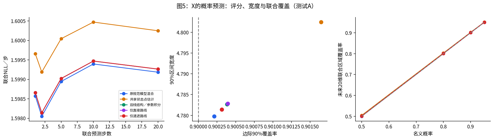
左图是1、2、5、10、20步联合NLL除以步数，并非把边际NLL相加；越低越好。中图把边际90%覆盖与区间宽度一起看，防止只靠放宽区间提高覆盖。右图是完整未来20维混合预测分布的Rosenblatt联合区域覆盖，不是把20个边际区间拼起来，也不是矩匹配椭圆。用于判断区域成员关系的未来前缀不反馈预测模型。X预测校准仍不能证明潜在U/V后验校准。
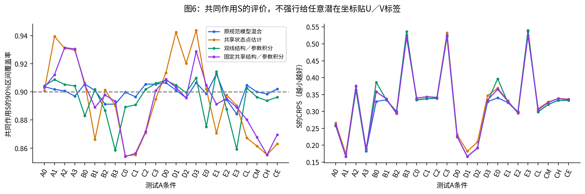
统一目标为真实噪声前作用S=CW。带观测AR的候选按a·X过去＋CW计算其作用解释。不同结构的潜在坐标可能旋转、混合或有不同维数，不能把其第一、第二坐标强行当U/V。左图检查S的90%覆盖，右图检查proper score CRPS，越低越好。即便S可以预测和校准，也不意味着产生S的物理分解唯一。
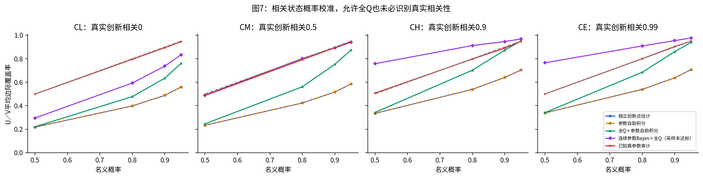
四列真实创新相关分别为0、0.5、0.9、0.99；真值只在测试完成后的审计中开放。曲线展示U、V平均边际覆盖，45度线代表名义与实际一致。独立创新点估计、有限bootstrap参数积分、全Q不可识别方向积分、连续参数MCMC积分和真参数oracle分开报告。全Q允许正确机制存在于模型族，并不意味着X能够选出真实相关性。均值曲线不能代替逐坐标覆盖及置信区间，后者见数据表。
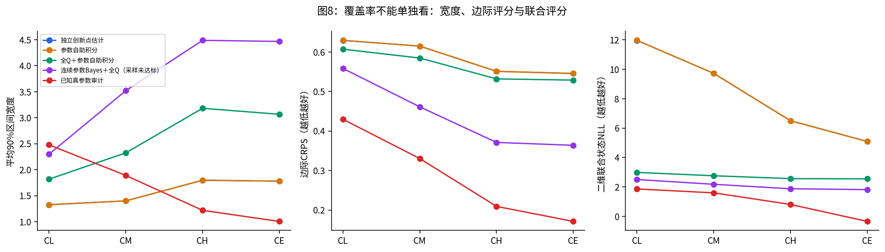
左图是U/V边际90%区间宽度，中图是边际CRPS，右图是二维联合状态NLL；后两者越低越好。扩大不确定性可能改善覆盖，也可能付出宽度与密度评分代价。full-Q或Bayes若表现不好，可能来自观测不可识别、有限样本、参数近似、MCMC混合及积分误差，不能只归因为区间太窄。oracle使用真实参数，仅是事后参考，不是可部署方法。
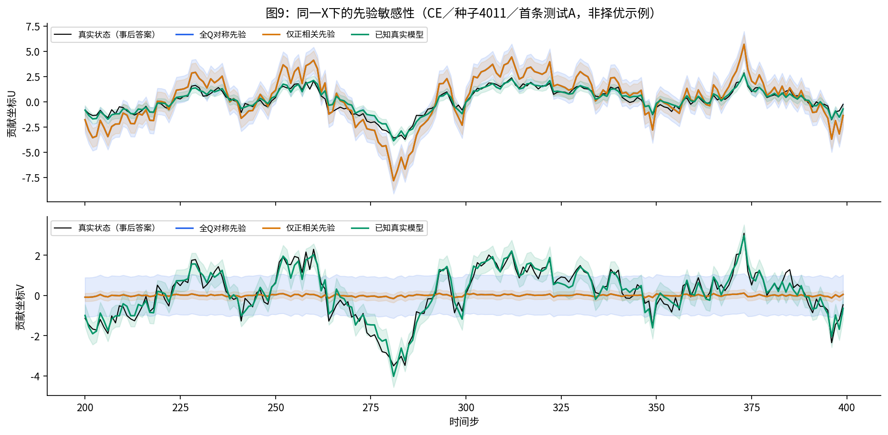
固定CE、种子4011、第一条测试A、时间200至399。黑线是真实U/V；有色曲线为混合后验均值，阴影由混合CDF反演得到90%区间，没有用均值±标准差冒充混合分位数。全Q对称先验与仅正相关先验使用相同可识别参数粒子，仅改变X无法辨别的相关方向先验。若曲线改变，说明物理解释依赖先验，而非新观测发现了真实相关性；正相关先验恰巧更接近本实验真值也不能反向证明它被数据识别。
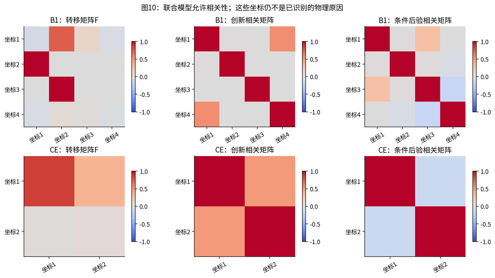
固定B1和CE种子4011，显示R训练池联合模型F、Q的相关形式以及时刻350的完整滤波后验相关。非零非对角项说明实现没有把各状态强行独立处理。坐标1、2等是计算坐标，不能据此命名为源头Y、中介Z或推断物理因果边；可逆坐标旋转可改变这些矩阵，同时保持X的预测与似然不变。
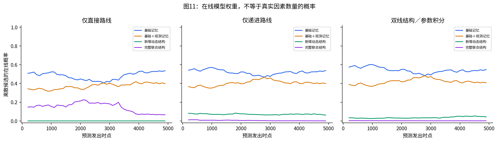
固定B1种子4011，将每条路线的候选粒子按工作结构聚合显示。新X到达后，依其条件观测似然更新权重；每个模型内同一X只计一次，双线不把同一X似然相乘。概率集中可能只是有限粒子竞争的结果，不等于某个真实隐藏变量存在的后验概率，更不等于已经证明因果方向。状态条件协方差、候选权重和连续参数不确定性是不同层次。
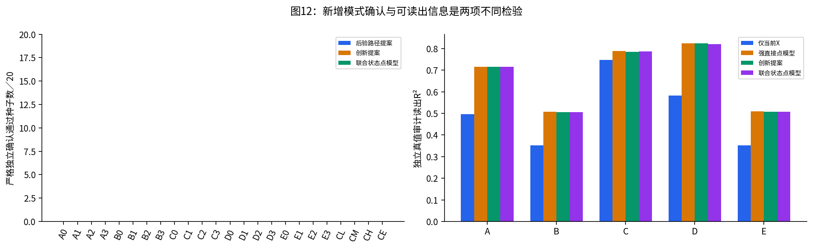
左图的通过要求R/D两独立训练池、两个新确认块全部达到0.005门槛，并在5760项确认检验Holm校正后通过及满足跨池功能匹配。0通过说明本方案未确认新增实用预测模式，不说明生成系统没有隐藏因素。右图另用stage13前10条拟合线性读出、后10条评价R²，真实状态仅用于审计读出，不回流推断。R²提高表示潜在表示包含信息，不能将该监督读出当成X-only物理后验。
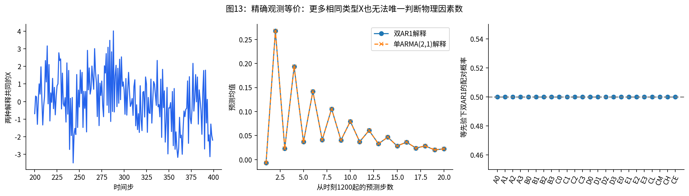
固定E1示例：左为共享X，中为同一时点发出的双AR1与单ARMA(2,1)预测，二者重合。右图在所有条件的规范双AR1解释与其精确映射ARMA解释之间，采用映射相同先验后配对概率保持约0.5。此证书说明某些物理分解不能仅靠同类X区分，不是模型已经能自动识别一切未知等价结构。单AR2一般不与双AR1精确等价，审计表单独给出其协方差差异。
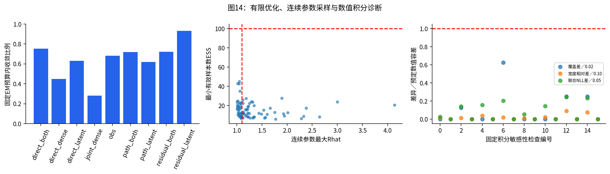
左图显示新候选在固定3初值、24次EM上限内的收敛比例；未收敛不是模型被证明错误，也不能宣称已找到全局最优。中图是80个连续参数MCMC任务的最大Rhat与最小ESS，红线是预定1.1与100，未达标准的样本仍归档但不能冒称可信的收敛后验。右图固定四个新C条件种子4011两批，比较8/16个参数样本及17/33个相关方向节点，按预定容差标准化；超过1代表积分近似尚不稳定，禁止据此事后更换主设置。
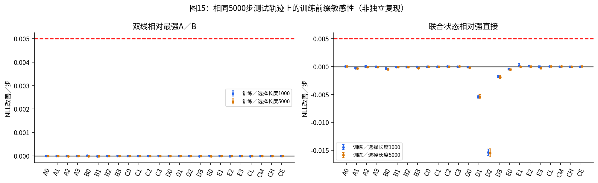
两种设置从同一训练、选择、确认轨迹分别取1000点前缀或5000点；测试均为相同5000点轨迹，相同预测时点。该图隔离学习历史长度对收益的影响，不是两次独立训练数据复现，也不能挑选更有利的长度替代原5000主要结论。1000条件仅补跑预测与确认，没有重复全部物理状态和连续参数Bayes审计。
仅观测X时，可以估计对预测有用的状态分布与动态作用，但从同一X递进提取并不会产生未传到X的上游信息。即使潜在表示能读出一些真实状态，也不能因此唯一确定真实直接／间接因果链。在本轮限定候选、预算与数据下，尚未得到递进／双线结构本身的稳定实用优势，不能直接进入因果发现或预警并把前提当作已解决。
本轮的Go／No-Go保持冻结规则：新增模式参考未达到时不宣称发现；双线未超过强单线时不宣称互补；状态概率未可靠校准时不把其置信度当物理证据；存在精确等价证书时拒绝唯一物理解释。后续如继续，应先明确增加了哪项可识别假设、外部信息或有效限制，再安排新的独立协议，而不是降低本轮门槛或加深递归次数。
| 问题 | 本轮能得出的判断 | 不能据此声称 |
|---|---|---|
| 后验路径递进提案 | 没有确认新增实用预测模式 | 不是证明系统没有隐藏因素，或一切递进方法永远无效 |
| 条件创新提案 | 计算严格因果、只作初始化；收益未达到冻结标准 | 不是仅凭残差动态就发现真实新状态 |
| 共享联合概率 | 已实现完整条件协方差且数值重放通过；预测收益和物理校准另未确证 | 不能把统计未胜出统称概率公式算错，也不能把实现正确当科学目标已成功 |
| 参数估计／积分 | 观测参数误差可审计；80个连续链未达到完整混合标准，积分敏感性可能超容差 | 不能称连续后验已可靠积分或精确恢复物理Q |
| 结构失配 | 独立Q物理解构可能与相关真值不符；允许全Q后仍有等价方向 | 不能只换成全Q就保证真实隐藏状态被识别 |
| 隐藏状态身份不可识别 | 精确观测等价及坐标旋转给出证书 | 不能靠更多同分布X、递归深度或更低预测误差消除这些歧义 |
| 计算预算限制 | 固定EM／采样上限有未收敛项；限制本实现可得结论 | 不能事后说“只因数据不够”或降低0.005门槛 |
具体下一步应先在与本轮测试隔离的开发任务上，检查规范谱参数的后验几何、采用更有效的参数化／采样方案并通过多链ESS及积分稳定性；随后重新登记独立验证，不能用修复后的结果覆盖本轮。若目标仍是物理因果链，则须另外说明哪种额外假设、干预或观测环境能打破已给出的等价证书。在这些前提明确之前，不进入因果图恢复和失效预警。